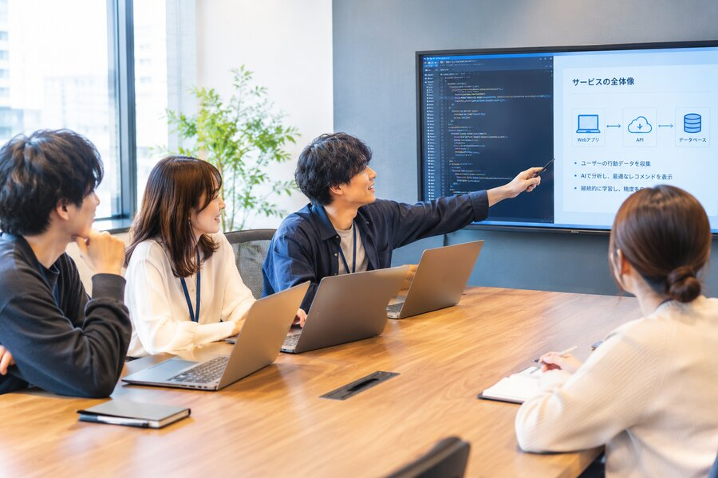

開発に時間がかかる
企画からリリースまで長期間かかり、ビジネスのスピードについていけない。
開発期間・コスト・品質、そのすべてを底上げする。
要件定義からお客様の事業を理解し、最適なシステムをスピーディーに実現します。

AI DRIVEN.
HUMAN CENTERED.
システム開発とゲーム開発。
経験と技術を、お客様の次の一歩に。
企画からリリースまで長期間かかり、ビジネスのスピードについていけない。
人月中心の開発では、必要な機能を実現するためのコストが大きくなってしまう。
「DXしたい」という想いはあっても、具体的なシステムや要件まで整理できていない。
要件を決めてから相談しなければならず、本当に必要なものを一緒に考えてもらえない。
私たちは、「何をつくるか」を決めるところから、一緒に考えます。
AIを開発プロセスに組み込むことで、設計・実装・テスト・ドキュメント作成などの開発工程を効率化。開発スピードを高めながら、品質を安定させ、コストの削減を目指します。
最大30%、納期を短縮。
AIとエンジニアが、開発工程を横断してサポート。
本当に必要な範囲を見極め、開発を進めます。
人材提供（SES）型と一気通貫型。どちらの形でも、AIを活用したご提案が可能です。
AI活用のノウハウを持つエンジニアが、AI導入をご提案しながら実装のスピードを高めます。必要な期間・体制で柔軟に対応します。
事業理解・要求要件定義から運用保守まで、AIとエンジニアが一気通貫で取り組みます。すべての工程の品質を高めながら、コストを抑えます。
相談
事業理解
AI × エンジニア要求要件定義
AI × エンジニア開発
AI × エンジニアリリース
運用保守
AI × エンジニア
AIによって開発を効率化しても、お客様の事業や現場を理解していなければ、本当に必要なシステムはつくれません。私たちは「Forward Deployed Engineer（FDE）」という考え方のもと、エンジニア自身がお客様の現場のデータに深く入り込み、課題の整理から要件定義、開発、運用まで一気通貫で並走します。
私たちの向き合い方受発注管理・在庫管理などの業務システム開発
業務フロー整理からのDX支援
AI活用の検討・開発
既存システムの改善・リプレイス
保守・運用・継続的な機能追加
受注開発と並行して、ゲーム開発にも取り組んでいます。プロジェクトの特性に応じて、AIを積極的に活用する場合もあれば、あえて活用しない場合もあります。

システム開発・DX・AI活用について、要件が固まっていない段階でもお問い合わせいただけます。
 CASE 03
CASE 03